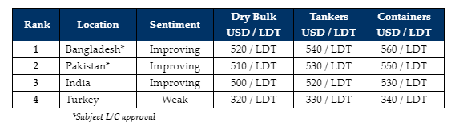

inWeekly Demolition Reports15/04/2024

Indian sub-continent ship recycling markets enjoyed a ‘greater than expected’ degree of apost-Ramadan resurgence as vessel prices across the various destinations seemed to have concurrently enjoyed varying degrees of an uptick this week on the back of which, some eye-opening sales were seemingly concluded into the various sub-continent locations.
However, this firming is certainly surprising, given that recycling destination currencies suffered through their own versions of (shocking) volatility against the U.S. Dollar this week and to still have witnessed a firmer week, is very unlike the reactionary performance of the overall ship recycling mindset, which also saw Sinokor’s container breach USD 600/LDT just last week. This sale promptly led to several (private & market) containers being proposed for sale this week, as surprised Ship Owners welcomed the possibility of achieving USD 600/LT for their again unit, which only resulted in a growing excitement amongst those Recyclers who are on the serious hunt for tonnage. Accordingly, frantic offerings ensued and although USD 600/Ton was not breached, several deals were reportedly concluded at these firmer overall levels. The only question that remains unanswered is just where any & all of these fixtures will eventually end up, given that pricing & geography remain the keys to unlocking fundamental redelivery considerations – and Pakistani & Indian levels are about get neck-to-neck.
Amidst this week’s unexpected batch of tonnage offerings of containers, several older bulkers & general cargo vessels from Far Eastern / Chinese markets remain on the recycling menu, as freight rates unexpectedly experienced their own ‘dip’ this week, after what has been an extremely strong & sustained charter market across nearly all sectors since the turn of the year, on account of a series of geopolitical unexpected events that have managed to keep rates artificially elevated thus far. Moreover, despite the dumping of cheap Chinese billets into the global / Indian markets, punitive tariffs are doing what they were meant to, i.e., helping avoid another catastrophe similar to the one in 2015, during ship recycling’s most recent recession. Indeed, the Indian market has jumped back into the picture this week, with some impressive offers on this most recent batch of containers, securing their vessels for dormant Alang yards, while Bangladesh once again picks up a majority of the rest. As Pakistani Recyclers rethink their price ideas and Turkey spends the week invisible in celebrations, it has certainly been an interesting overall week for the industry.
For week 15 of 2024, GMS demo rankings / pricing for the week are as below.

📄 Download PDF: Ship-recycling-market-insight-week-15-2024-Ramadan_Resurgence…Or_Not.pdfSource: GMS,Inc.https://www.gmsinc.net/gms_new/index.php/web